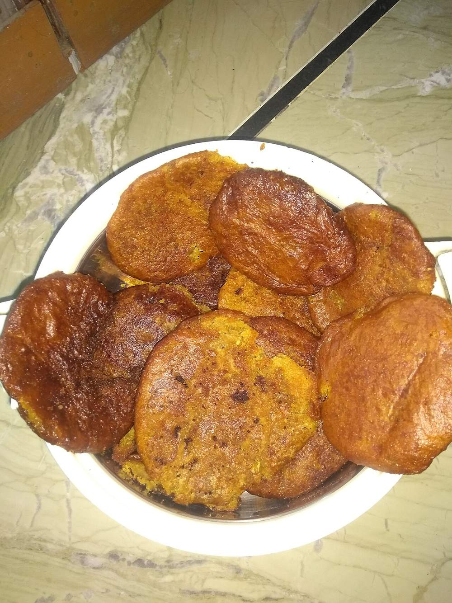

Start the day before. The resting alone is 8 hr, against 60 min of actual work.
Contains: sesame
Ingredients
Quantities for 6.
- 400g, coarse Rice Flourhill cooks soak and grind their own rice; coarse shop flour works
- 300g, chopped small Jaggery
- 120ml Water
- 2 tbsp Sesame
- 1 tsp, lightly crushed Fennel Seedsoptional
- 1/2 tsp, ground Cardamomoptional
- 700ml, for deep frying Neutral Oilmustard oil is traditional if you want the sharper hill version
- a pinch Saltoptional
Cookware
stovetop, kadhai
Checked against the ingredient list for ten allergens: milk, egg, fish, crustaceans, tree nuts, peanuts, sesame, mustard, soy and gluten. Brands vary, so read the label on anything new to you.
Before you start
- The dough must rest overnight at room temperature, covered. This is not optional. The rest is what gives arsa its chew, and same-day dough fries hard and flat.
- If you are grinding your own, soak the rice 6 hours, drain, dry in the shade for 2 hours until just damp, then grind coarse and sieve.
- Have a bowl of cold water beside you for wetting your palms while shaping. The dough is very sticky.
Method
- Melt the jaggery with 120ml water over low heat, stirring, until it dissolves, then strain out the grit through a fine sieve.
- Return the syrup to the pan and boil until it reaches one-thread consistency. A drop lifted between finger and thumb pulls a single strand, about 6 minutes.This is the make-or-break step. Under-cooked syrup gives soggy arsa; taken too far it sets hard and the dough will not come together.
- Pour the hot syrup over the rice flour in a wide bowl, add the sesame, fennel, cardamom and salt, and mix with a wooden spoon.
- Once it is cool enough to handle, knead 4-5 minutes into a soft, sticky dough that just holds together.
- Cover and rest at room temperature overnight, 8-10 hours.
- Next day, wet your palms and shape walnut-sized pieces into flat discs about 6cm across and 1cm thick.Keep re-wetting your hands. Dry palms tear the discs apart.
- Heat the oil in a kadhai to medium-low, about 160C. A scrap of dough should rise slowly after 4 seconds.Hot oil browns the outside while the centre stays raw. Low and slow is the whole technique.
- Slide in 3-4 discs at a time and fry 6-8 minutes, spooning hot oil over them and turning once, until deep reddish brown.
- Lift onto a rack and press each one gently with a slotted spoon to squeeze out oil. Cool completely before eating. They firm up as they sit.
Storage
Keeps 2 weeks in an airtight tin at room temperature, which is why arsa is made in batches for weddings and Diwali. Do not refrigerate; it goes hard and loses the chew.
Nutrition Good estimate
Low protein: 5 g a serving, 3% of the calories
| Per serving157 g | Per 100 g | |
|---|---|---|
| Calories | 601 kcal | 383 kcal |
| Protein | 4.7 g | 3 g |
| Carbohydrate | 104.8 g | 67 g |
| of which sugars | 50.0 g | 32 g |
| Fibre | 2.4 g | 2 g |
| Fat | 18.7 g | 12 g |
| of which saturated | 2.1 g | 1 g |
| of which unsaturated | 15.6 g | 10 g |
Ingredients given to taste count as zero, so the real figures run a little higher. Nearest database match used for jaggery. Estimated from raw ingredients using USDA FoodData Central.
More like this: Vegan Indian recipes · Vegetarian Indian recipes · Gluten-free Indian recipes · Dairy-free Indian recipes · No onion no garlic recipes · Pahari recipes
Times, yields, allergens and nutrition are guidance. Use your own judgement on doneness and on storing. More in About.